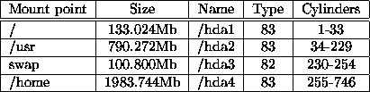

Concerning partitions, you'd better follow the suggestions on the
RedHat manual. Here below you'll find an example; this doesn't mean
that these partitions represent the result of a deep study of the
problem nor any kind of optimised configuration.
You can use either Disk Druid or fdisk as partitioning
tool; as I read
about some problems using Disk Druid, I preferred using fdisk, even
if the first one may be more easy to use. Always carefully follow the
instructions on the manual.
I've used a 3.0Gb harddisk, 746 cylinders, I created 4 partitions. The
partition table is shown in table 2.
If you want to let normal no-root user to mount floppy disks, edit /etc/fstab: the floppy disk related line should look like this:
/dev/fd0 /mnt/floppy ext2 noauto,user 0 0the same applies for the CD. A better way is to use the utility cabaret.

Table 2: One possible partition table